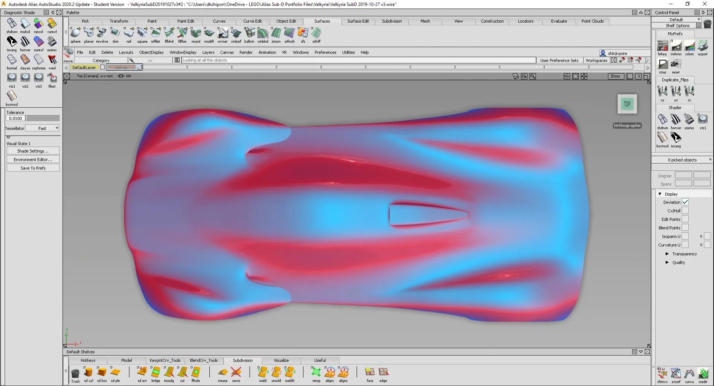
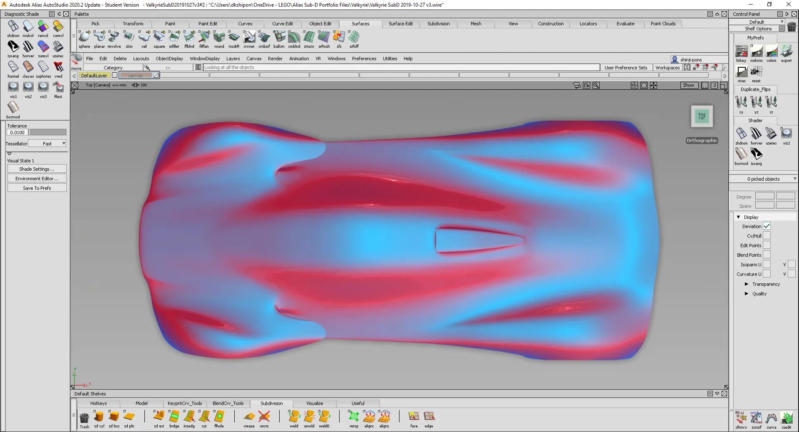
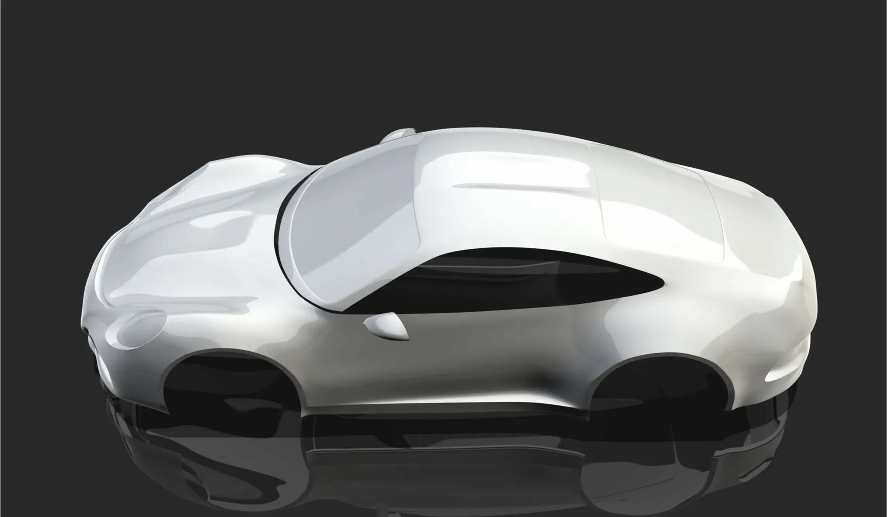
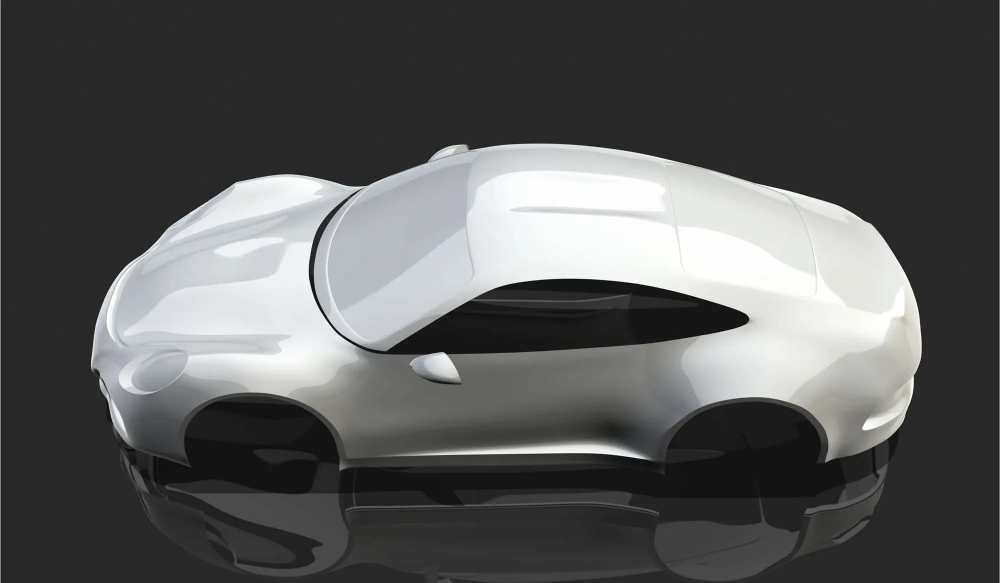

Alias 2020 industrial design software offers a unified hybrid modeling solution with integrated SUBD modeling paradigms.
Alias 2020 introduces new subdivision surface modeling tools aimed at adding speed and flexibility to your concept modeling and idea creation workflows. The addition of subdivision surfaces to Alias integrates the strengths of adaptive subdivision with native NURBS surface technology.
This means that your concept modeling can be done within a hybrid NURBS and subdivision surface modeling environment, which lets you combine NURBS editing tools and workflows with subdivision objects. Subdivision surfaces also support construction history, so your combined workflows remain fast and efficient.
 

 
